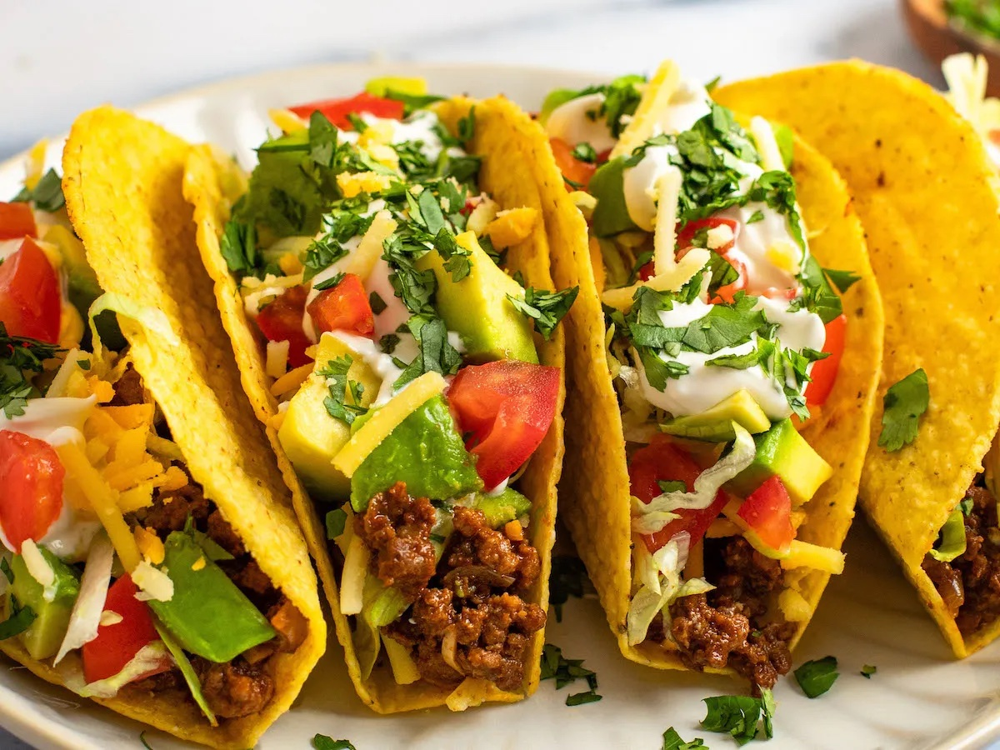

Tacos

Description
Remember those classic Tex-Mex beef tacos from your childhood? The ones with crispy shells, brimming with juicy, seasoned beef, and a variety of toppings that made dinnertime fun, long before Taco Tuesday became a thing? These are those very tacos, only better, and they’ll bring back all those flavorful memories. Building on the classic recipe, I “chef it up” by quickly mixing the ground beef with baking soda before cooking. This little trick ensures the beef turns out extra tender. When serving, set out optional toppings like shredded lettuce, Mexican-blend cheese, diced tomatoes, and sour cream so everyone can make their own perfect taco. And if your family loves taco night as much as mine, consider making a double batch of the beef filling and stashing half in the freezer. When you’re ready for round two, just thaw and reheat the beef, prep the toppings, and dinner’s on the table!
Ingredients
- tomato sauce
- oil
- garlic
- cumin
- smoked paprika
- onion
- lime
- baking soda
- salt
- sugar
- sour cream
- cilantro
- oregano
- cayenne
- coriander
- ground beef
- avocado
- chuli powder
- tomatoes
- shredded lettuce
- cheese
- taco shells
Instructions
- In a medium bowl, mash the beef with the baking soda and salt. Let sit for at least 15 minutes or up to 1 hour. This process raises the pH level of the beef, making it more alkaline and resulting in a more tender texture. I use this technique in many recipes, including beef enchiladas and beef chili, to ensure the meat stays juicy and flavorful. (Time-Saving Tip: Use the time that the beef is sitting with the baking soda to chop the onions and garlic and measure out the spices.)
- Heat the oil in a large nonstick skillet over medium heat until hot and shimmering. Add the onion and cook, stirring occasionally, until softened, about 4 minutes.
- Add the garlic and cook 1 minute more. Do not brown.
- Add the beef and spices.
- Cook, stirring constantly and breaking meat up with a wooden spoon, until the beef is no longer pink, about 5 minutes. Add the tomato sauce, water, sugar, and lime juice.
- Bring to a simmer. Reduce the heat to medium-low and cook, uncovered, stirring frequently and breaking up the meat so that no chunks remain, until the liquid has reduced and thickened (the mixture should not be completely dry), 10 to 15 minutes. Taste and adjust seasonings if necessary.
- Using a wide, shallow spoon, divide the filling evenly among taco shells; place two or three tacos on individual plates. Serve immediately, passing the toppings separately.